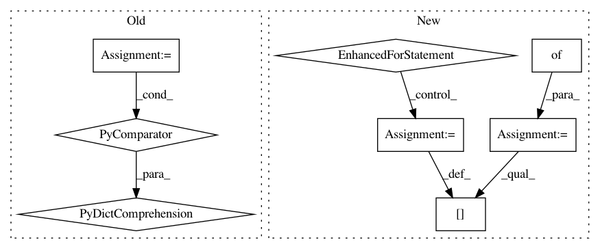

82d573a8775982e3c601d690bdf934c54cc07d54,sacred/experiment.py,Experiment,get_default_options,#Experiment#,476
Before Change
_, _, internal_usage = self.get_usage()
args = docopt(internal_usage, [])
return {k: v for k, v in args.items() if k.startswith("--")}
// =========================== Internal Interface ==========================
def _create_run(
After Change
its default value.
default_options = {}
for option in self.all_cli_options:
if isinstance(option, CLIOption):
if option.is_flag:
default_value = False
else:
default_value = None
else: // legacy, should be removed later on.
if option.arg is None:
default_value = False
else:
default_value = None
default_options[option.get_flag()] = default_value
return default_options
// =========================== Internal Interface ==========================
In pattern: SUPERPATTERN
Frequency: 3
Non-data size: 8
Instances
Project Name: IDSIA/sacred
Commit Name: 82d573a8775982e3c601d690bdf934c54cc07d54
Time: 2019-10-10
Author: gabrieldemarmiesse@gmail.com
File Name: sacred/experiment.py
Class Name: Experiment
Method Name: get_default_options
Project Name: IDSIA/sacred
Commit Name: 0d15284cbdf83502e8df1d9d637ae1fa1f59a55a
Time: 2016-12-21
Author: qwlouse@gmail.com
File Name: sacred/host_info.py
Class Name:
Method Name: get_host_info
Project Name: BVLC/caffe
Commit Name: 5d584c27f062e9557aa920af6758b995f4094ed9
Time: 2014-05-16
Author: shelhamer@imaginarynumber.net
File Name: python/caffe/pycaffe.py
Class Name:
Method Name: _Net_batch